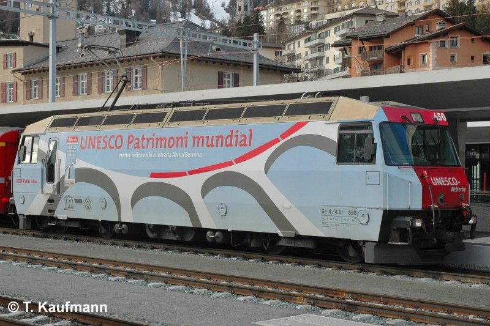
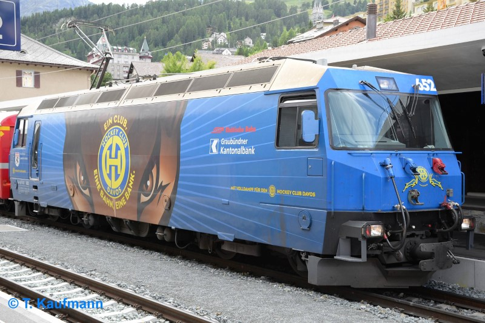

Allgemein
| Baujahr | 1999 |
| Einsatz | StN |
| Antriebstechnik | Umrichtersteuerung |
| Leistung | 3265 PS / 2400 kW |
| Ergänzungsbremse | elektrische Rekuperation |
Technische Daten
| Geschwindigkeit | 100 km/h |
| Länge | 16.0 m |
| Gewicht | 62 t |
| Bremsgewicht | 62 t |
| Feststellbremse | Fsp 20 t (Fsp 50 kN) |
Fahrzeugausrüstung
| Nylatron-Pufferplatten | ja |
| Vielfachsteuerung | 19 polig [1] |
| Zugbeeinflussung | ZSI E |
| Heizleitung | StN |
| Speiseluft-Leitung | ja |
| Bremssystem | Druckluft-Hauptleitung |